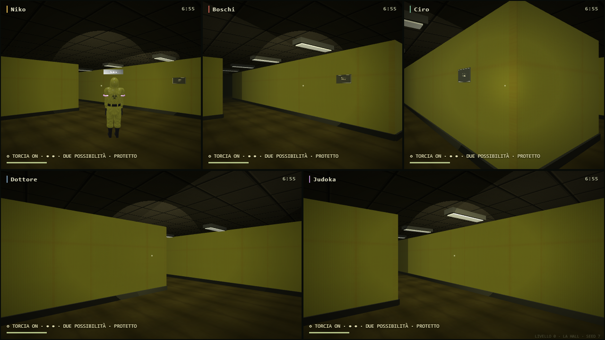

PARTY GAME · BACKROOMSOra cercano davvero.
Perdere il contatto visivo avvia una ricerca nelle diramazioni vicine: il mostro usa l'ultima direzione osservata e si volta per ritrovare la preda. Rumori, coperture e tempo continuano a fare la differenza.
- Breve anticipo dei movimenti visibili, con controlli sugli ostacoli.
- Pattuglie meno ripetitive e più distribuite.
- Smiler preferisce il buio e arretra dalla torcia.
- Partygoer prepara l'esca in stanze adatte.
60,3 FPS · cinque visuali
Campione breve su RTX 3050, 1280×720 nativi, qualità alta, seed 7. 180 frame, p95 16,8 ms. Le prestazioni dipendono dal dispositivo e dalla situazione.

Otto prove mirate dell'IA e regressione essenziale di Backrooms superate. Nessun commit, push o deploy.